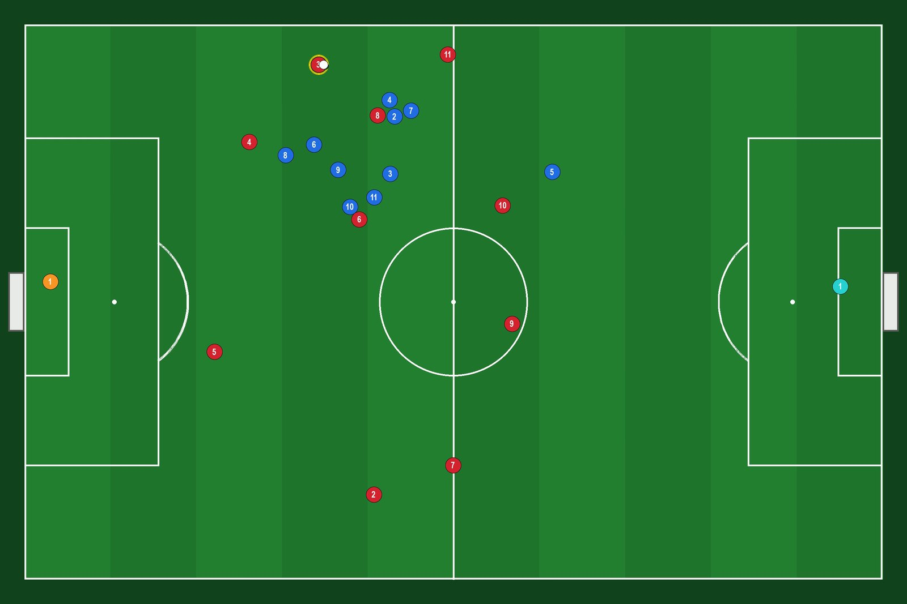
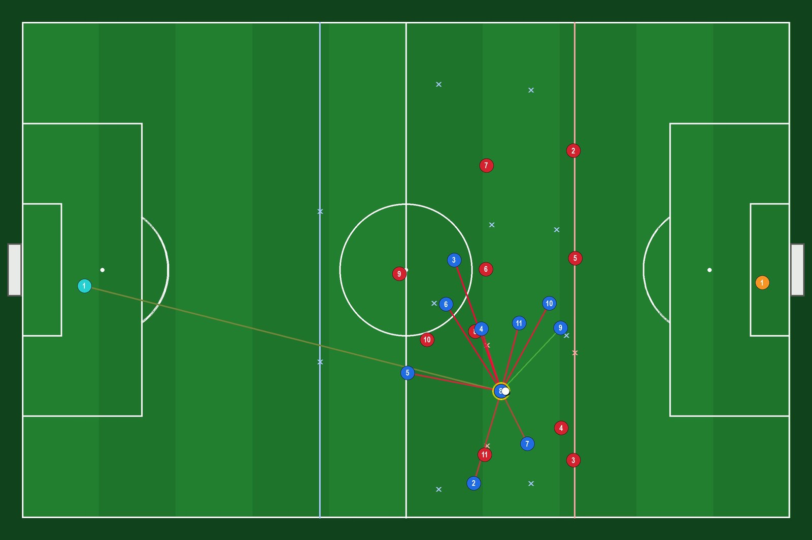

Jowa Football AI v3
11v11 · Two AI brains · MAPPO with an entity transformer
The AI
Jowa Football AI v3 is a full 11v11 football match where all 22 players are controlled by AI. Two separate brains play each other: red always plays team 0 and blue always plays team 1. Each brain has its own network, its own training and its own pool of past opponents.
Each brain is a multi-agent PPO (MAPPO) model. One shared entity transformer drives all eleven players of its team: every player sees the ball, its ten teammates and the eleven opponents as separate tokens, and attention lets each decision take the whole pitch into account. A coach head picks the team instruction (block height and style), and a centralised critic scores the play during training.
The policy decides what to do — who presses, who covers, who runs in behind, whom to pass to and when to shoot — while a tactical layer executes the movement and keeps the team in shape. For every pass option the brain is given an estimate of its chance of success.


Both pictures are real matches of the red brain against the blue brain with the default weights. The second one shows the tactical overlay (key O): the team lines, the formation anchors and every pass option, coloured by its estimated chance of success.
What's New in v3
Model & Game Info
| Mode | 11v11, red brain vs blue brain |
| Pitch | 105 × 68 m · physics 20 Hz · decisions 5 Hz |
| Algorithm | MAPPO — PPO with GAE, value normalisation, self-play |
| Network | Entity transformer: 3 layers, d = 192, 6 heads |
| Parameters | About 3.1M per brain (actor 1.62M + critic 1.50M) |
| Observation | 24 tokens × 56 features per team |
| Actions | 19 per player (move, press, mark, cover, tackle, shoot, …) + pass target |
| Default weights | Red & blue brains at 52,783,408 training steps |
| Device | Apps: CPU · Source code: CUDA (GPU) or CPU |
| Build | 2.1.0 |
The first 3M training steps imitate the built-in rule-based AI to get started; after that the brains learn only from playing. They are still learning: against the rule-based AI they lose more matches than they win.
Download
The Windows and Linux apps come as a ZIP with the default weights inside — the red and blue brains at 52.8M training steps — so the AI plays right away. The source code is the full project without weights.
The apps include PyTorch for the CPU, so no Python or GPU is needed; to train on an NVIDIA GPU, use the source code. SHA-256 checksums
How to Run
Windows or Linux app
Extract the ZIP
Keep the extracted folder together: the weights sit next to the app.
Watch the two brains play
Start the app from a terminal in the extracted folder with --play. On Linux, mark the ELF file as executable first.
# Windows jowa-football-ai.exe --play # Linux chmod +x ./jowa-football-ai ./jowa-football-ai --play
Or let them train
Without options (or with a double-click on Windows) the app starts in normal mode: a visible match at real-time speed while both brains keep training from the default weights. New checkpoints, logs/ and screenshots/ are saved in the app's folder. --help lists every option.
From the source code
Install the dependencies
Python 3 with PyTorch (the CUDA build for an NVIDIA GPU), pygame and NumPy.
Add the weights (optional)
To use the default brains, copy the checkpoints folder from the Windows or Linux ZIP (latest_red.pt, latest_blue.pt and their .sha256 files) next to jowa-football-ai.py. Without it, training starts new brains.
Run it
# watch the red brain play the blue brain python jowa-football-ai.py --play # red brain against the rule-based AI python jowa-football-ai.py --play --blue scripted # visible training at max speed, resumes automatically python jowa-football-ai.py --train
Controls
Match window
P pause | 1…8 or +/− speed | O tactical overlay | H stats panel | S screenshot | Q save and quit
Take control of a player
TAB / ↑ ↓ select | Enter take control | ESC give it back to the AI
WASD / arrows move | Space shoot | F pass | T tackle